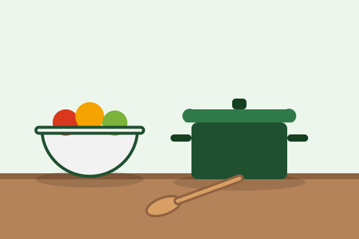
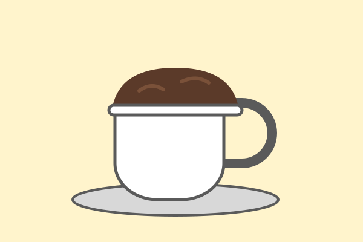
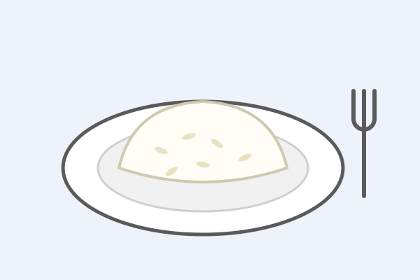

Receitas que cabem na vida de todo mundo
Cozinhar é uma atividade do dia a dia, e a acessibilidade também precisa estar lá. Aqui você encontra receitas com poucos passos, escritas em linguagem clara e com adaptações para pessoas cegas, com baixa visão, surdas, com mobilidade reduzida ou com dificuldade de concentração.
O site também foi construído para ser acessível: funciona só com o teclado, tem alto contraste e um cronômetro que avisa por som, por texto e por vibração.

Receitas em destaque
-

Bolo de caneca de chocolate
Pronto em 5 minutos, no micro-ondas e em uma única caneca.
-

Arroz branco soltinho
O básico do dia a dia, com sinais de ponto que não dependem da visão.
-

Tapioca recheada
Rápida, sem glúten e com recheio doce ou salgado.
Aprenda sobre acessibilidade na cozinha
- Como tornar a cozinha mais acessível: espaço, utensílios e segurança para cada necessidade.
- Como escrever receitas acessíveis: o que muda quando a receita é pensada para todos.
Como usar este site
- Navegue só com o teclado: Tab avança, Shift + Tab volta e Enter ativa links e botões.
- No topo de cada página há atalhos para o conteúdo, o menu e o rodapé. Veja as teclas em atalhos de teclado deste site.
- Na barra de ajustes, aumente o texto, ative o alto contraste ou o espaçamento ampliado. O navegador guarda suas escolhas.
- O botão do VLibras, no canto da tela, traduz o conteúdo para Libras. Ele precisa de internet.
- Para ver todas as páginas, use o mapa do site.